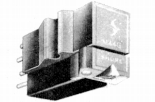
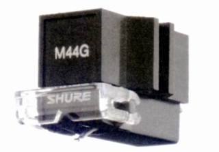
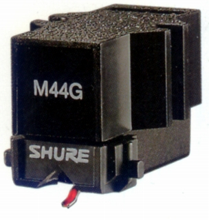

M44G

■価格 7,500円
■発電方式 MM型
■出力電圧 6.2mV
■針圧 0.75〜1.5g
■再生周波数帯域 20-20,000Hz
■チャンネルセパレーション 25dB
■チャンネルバランス
■コンプライアンス
■負荷抵抗
47kΩ
■直流抵抗 650Ω
■インピーダンス
■針先 0.6mil
■自重 7g
■交換針 N44G(5,000円)
■発売
1971〜73年
■販売終了 1996〜98年頃
■備考 価格は1973年頃のもの
1976年には7,900円
1979年頃には8,500円
N44G(3,700円)
1981年頃には9,200円
N44G(4,000円)
1983年頃には10,000円
1985年頃にはN44G(4,400円)
1987年頃には8,900円
N44G(4,200円)
1977年の資料では 出力電圧 7mV
1985年の資料では 自重 6.5g
出力電圧 6.2mV
1990年代後半に、後継モデルM44GXの発売で一旦製造中止となったが、
1999年に復活した。

■価格 12,000円
■発電方式 MM型
■出力電圧 9.5mV
■針圧 0.75〜1.5g
■再生周波数帯域
■チャンネルセパレーション
■チャンネルバランス
■コンプライアンス
■負荷抵抗
■負荷容量
■インピーダンス
■針先 円錐
■自重 6.7g
■交換針 N44G(6,000円)
■発売
1999年
■販売終了 年頃
■備考 現在ではオープン価格で販売されている。

（最近のカタログより）